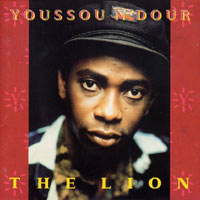

Альбом Youssou N'dour The Lion/Gaïende, к сожалению, довольно типичная жертва клишированного подхода к музыке большинства западных продюсеров. (Там вообще склонны идти от простого - резать по живой ткани музыки, дистиллировать звук и набирать аккомпанирующий состав из типичных студийных профи, играющих все... и ничего, в итоге.) Однако и прохладное отношение музкритиков к этому альбому мне кажется не заслуженным - и чем больше проходит времени, тем определеннее. Возможно, мое мнение пристрастно, потому что лично для меня с этой записи началась любовь к музыке Youssou N'dour, но я хочу сказать...Альбом получился неровным и слушать его целиком довольно тяжело. Психологически самая важная центральная часть отдана под довольно бесцветные прозападные поп-песенки - The Truth и Old Tucson. Более интересные варианты той же идеи - Bes и Sama Doom(My Daughter). Последняя - спетое с неподдельным теплом посвящение дочери поверх «приджазованного» mbalax(искусно вписанное соло известного саксофониста David Sancious).
Версия известной песни Peter Gabriel Shakin' The Tree при участии автора появилась, скорее всего, по двум причинам: желание продюсеров связать мало кому известного певца с известной звездой и дань благодарности самого Youssou N'dour человеку, который сделал так много для пропаганды современной этно-музыки(DIEURE DIEUF Peter Gabriel).
The Lion/Gaïende и Kocc Barma - образцы звучания подлинного mbalax с замечательно прописанными ритм-трэками барабанов tama и sabar. The Lion, к тому же, неподражаемая композиция для изучения и об'яснения музыкальных основ стиля и акустической роли отдельных инструментов.
А теперь о подлинных шедеврах этого альбома - Bamako и Macoy.
Первая песня - проникновенный рассказ о мимолетной встрече с девушкой в Бамако(Bamako - столица Мали, граничащего с Сенегалом). Буквально парящая, удивительно светлая композиция с очень интересно наложенными вокальными партиями.
Macoy - мощный этно-гимн со всем пафосом западной трактовки: стеной синтезаторного звука, бесконечными переналожениями, женским хором и аранжировкой с явным влиянием Peter Gabriel. То, что творит Youssou N'dour из этого типового набора, кажется невероятным - его голос захватывает, втягивает внутрь совершенно особого мира, заставляя переживать чужую боль и тоску.
И песни продолжают звучать... ради чего, собственно, и слушаешь музыку.